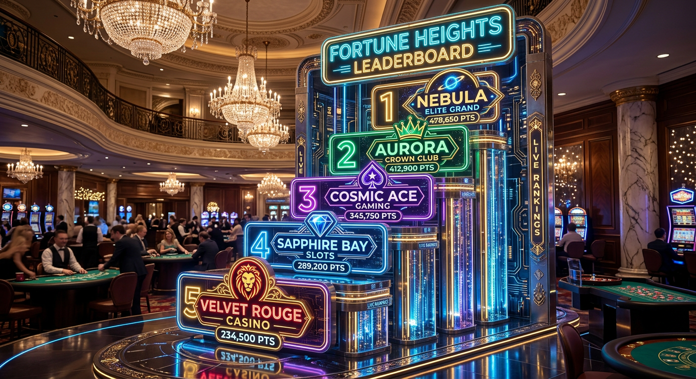
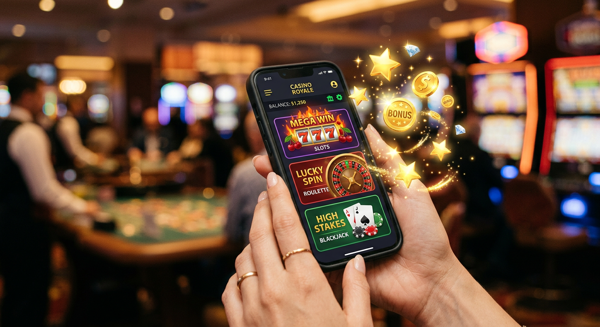
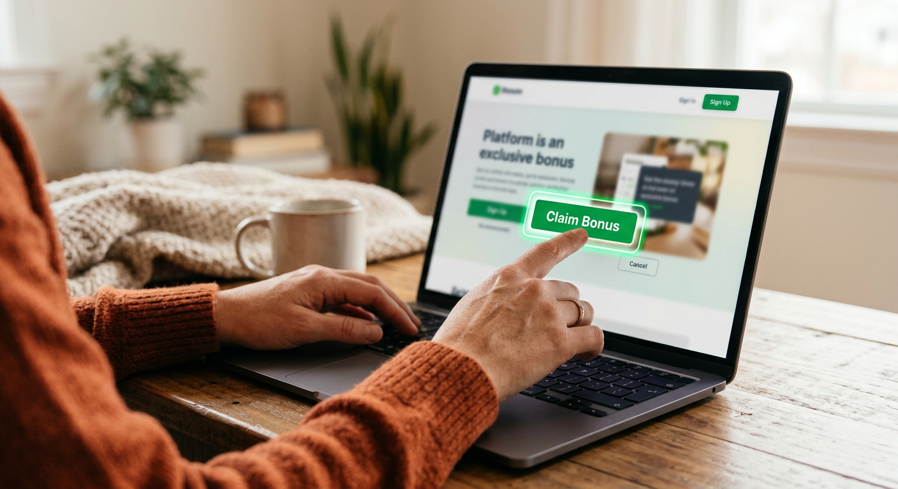
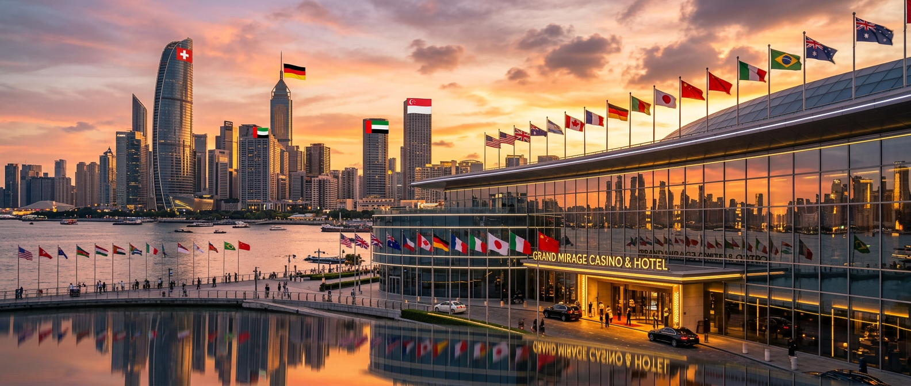

Bonus casino senza deposito non aams: Guida Completa alle Offerte Immediate 2026
Il panorama del gioco d'azzardo online ha subito una trasformazione radicale nel corso del 2026. Gli appassionati italiani sono sempre più alla ricerca di opportunità che permettano di testare le piattaforme senza dover investire immediatamente il proprio capitale. In questo contesto, il bonus casino senza deposito non aams rappresenta la soluzione più ambita, offrendo la possibilità di esplorare cataloghi di gioco vastissimi con crediti gratuiti o giri omaggio. Questi operatori, pur non possedendo la licenza italiana ADM, operano legalmente a livello internazionale grazie a concessioni rilasciate da autorità prestigiose come quelle di Curaçao o di Malta.
Le piattaforme internazionali sono riuscite a conquistare una fetta di mercato significativa grazie a politiche di marketing estremamente aggressive e a una burocrazia snella. Nel 2026, la velocità di accesso ai giochi è diventata un fattore determinante per l'esperienza utente. Mentre i siti locali richiedono spesso lunghi processi di verifica, i portali stranieri permettono di iniziare a giocare quasi istantaneamente, mantenendo comunque standard di sicurezza elevati e sistemi di crittografia di ultima generazione per la protezione dei dati sensibili.
Analizzare un bonus casino senza deposito non aams richiede un'attenzione particolare non solo all'importo offerto, ma soprattutto alle condizioni di utilizzo. Spesso, queste promozioni nascondono meccaniche di conversione che l'utente deve conoscere per trasformare il credito virtuale in denaro reale prelevabile. In questa guida aggiornata, esploreremo ogni dettaglio delle offerte disponibili nel 2026, fornendo gli strumenti necessari per scegliere consapevolmente tra le migliori proposte del mercato estero.
Cosa sono i bonus senza deposito nei casinò stranieri?
Un bonus casino senza deposito non aams è un'offerta promozionale che un operatore internazionale mette a disposizione dei nuovi iscritti senza richiedere un versamento iniziale. Queste promozioni sono progettate per attirare l'attenzione in un mercato globale estremamente competitivo, dove brand come Boomerang o Wild Tokyo lottano per offrire le condizioni più vantaggiose. A differenza dei siti AAMS, che hanno spesso limiti più stringenti imposti dal regolatore nazionale, i siti non AAMS godono di una maggiore flessibilità finanziaria e operativa.
Nel 2026, queste offerte si presentano principalmente sotto due forme: credito bonus (soldi virtuali) o giri gratis (free spin). Il credito viene accreditato sul conto di gioco subito dopo la registrazione e può essere utilizzato su una vasta gamma di software, dalle slot machine ai tavoli verdi. È importante sottolineare che questo tipo di un bonus non è denaro prelevabile immediatamente, ma funge da "palestra" per conoscere il sito e tentare la fortuna senza rischi finanziari personali.
La natura internazionale di questi operatori permette loro di accettare giocatori da diverse giurisdizioni, offrendo un'esperienza multilingue e multivaluta. Molti utenti italiani preferiscono queste piattaforme perché permettono di evadere dai limiti tecnici spesso presenti nel circuito nazionale, accedendo a fornitori di software che non collaborano con il mercato ADM. Il bonus casino senza deposito non aams diventa quindi una porta d'accesso a un mondo di intrattenimento più vasto e tecnologicamente avanzato.
La differenza tra bonus reale e fun bonus
Comprendere la distinzione tra fun bonus e real bonus è fondamentale per chiunque decida di sfruttare un bonus casino senza deposito non aams. Il fun bonus è la forma più comune di credito gratuito offerto nel 2026. Si tratta di un saldo virtuale che non può essere prelevato direttamente, ma deve essere scommesso un certo numero di volte (rollover) prima di essere convertito in real bonus. Solo una volta trasformato in real bonus, e solitamente rigiocato un'ulteriore volta, le vincite diventano prelevabili.
Il real bonus, invece, è una rarità nelle promozioni senza deposito, ma può capitare di trovarlo in piattaforme d'élite. In questo caso, il requisito di scommessa è solitamente pari a 1x. Nel 2026, la trasparenza è aumentata e i casinò come LamaBet o Need for Spin indicano chiaramente nel pannello utente la progressione del bonus di benvenuto, permettendo di monitorare quanto manca alla conversione completa del saldo.
Perché i siti non AAMS offrono promozioni più elevate?
La ragione principale per cui un bonus casino senza deposito non aams è solitamente più generoso rispetto a quello dei competitor italiani risiede nel regime fiscale e nei costi operativi. Gli operatori con licenza Curaçao eGaming o simili pagano tasse inferiori e hanno meno vincoli strutturali rispetto a quelli regolamentati dall'ADM. Questo risparmio viene reinvestito in marketing e promozioni, traducendosi in offerte di giri gratuiti o credito cash di importo superiore.
Inoltre, la competizione globale è feroce. Un sito che opera su scala mondiale deve distinguersi tra migliaia di concorrenti. Offrire un bonus casino senza deposito non aams sostanzioso è il modo più efficace per scalare le classifiche di gradimento nel 2026. Piattaforme come Winnita o Fat Pirate utilizzano queste strategie per costruire rapidamente una base utenti solida, puntando sulla fedeltà a lungo termine del giocatore una volta che ha testato la qualità del servizio.
Classifica dei Migliori Bonus Casino Senza Deposito Non AAMS 2026

Per aiutare i giocatori a orientarsi, abbiamo selezionato le piattaforme più affidabili che offrono un bonus casino senza deposito non aams nel 2026. Questa selezione si basa sulla sicurezza, la varietà dei giochi e la reale possibilità di convertire il bonus in denaro reale. Di seguito, una tabella comparativa delle migliori opzioni attuali.
| Casinò Online | Tipo di Bonus Senza Deposito | Requisito di Scommessa | Vantaggio Principale |
|---|---|---|---|
| Boomerang | 50 Giri Gratis su Slot Selezionate | 35x | Interfaccia ultra-veloce |
| Wild Tokyo | 15 Euro di Credito Bonus | 40x | Design futuristico e VIP Club |
| LamaBet | 25 Free Spin senza invio documenti | 30x | Accetta numerose criptovalute |
| Need for Spin | 10 Euro immediati alla registrazione | 45x | Ampio catalogo di slot Megaways |
| Winnita | 20 Giri Gratuiti sulla slot del mese | 38x | Tornei quotidiani con premi cash |
Questi operatori sono stati testati rigorosamente per garantire che il bonus casino senza deposito non aams promesso venga effettivamente erogato. Nel 2026, la reputazione è tutto, e brand come Fat Pirate o BetAlice investono pesantemente nel supporto clienti per risolvere eventuali intoppi durante l'attivazione delle promozioni gratuite. Ricordate sempre di leggere i termini e le condizioni specifici di ogni singola offerta, poiché possono variare anche all'interno dello stesso casinò.
Tipologie di promozioni gratuite disponibili

Il mercato dei bonus casino senza deposito non aams si è diversificato enormemente. Non esiste più una sola tipologia di offerta "standard", ma diverse varianti studiate per adattarsi alle preferenze di ogni tipologia di giocatore. Alcuni preferiscono le slot machine, altri i giochi da tavolo, e altri ancora cercano l'emozione del live casino. Le piattaforme internazionali hanno risposto a questa esigenza creando pacchetti personalizzati.
Tra le offerte più comuni nel 2026 troviamo i giri gratis senza deposito non aams, ideali per chi ama i rulli e le grafiche animate. Altra opzione molto ricercata è il 10 euro senza deposito non aams, un classico che permette una libertà d'azione superiore rispetto ai free spin vincolati a un singolo titolo. Vediamo nel dettaglio come funzionano queste diverse promozioni e quali sono i loro punti di forza.
Giri gratis sulle slot machine più popolari
I giri gratis rappresentano probabilmente la forma più diffusa di bonus casino senza deposito non aams. Solitamente, il casinò assegna un numero prefissato di rotazioni (che può variare da 10 a 100) su una slot machine specifica o su una selezione di titoli di un particolare provider come Pragmatic Play o NetEnt. Nel 2026, è frequente trovare offerte di free spin senza deposito immediato no aams che permettono di giocare senza alcuna attesa tecnica.
Il valore di ogni giro è preimpostato, generalmente sulla puntata minima consentita dal gioco. Le vincite ottenute attraverso questi giri gratuiti vengono accumulate in un saldo bonus. Per prelevare tali somme, sarà necessario soddisfare i requisiti di giocata specificati dal casinò. Questa tipologia di il bonus è eccellente per testare le nuove meccaniche delle slot senza rischiare nulla, godendosi lo spettacolo visivo e sonoro dei titoli moderni.
Credito bonus immediato sul saldo di gioco
Ricevere un bonus casino senza deposito non aams sotto forma di denaro reale (fun bonus) offre una flessibilità che molti giocatori apprezzano. A differenza dei free spin, questo credito può essere spalmato su diversi giochi. Ad esempio, con un bonus di 10 o 20 euro, è possibile provare qualche mano di blackjack, una sessione di roulette e poi passare alle slot machine. Questa libertà permette all'utente di farsi un'idea completa dell'offerta ludica della piattaforma.
L'accredito di questo tipo di bonus avviene solitamente in modo automatico dopo la conferma dell'indirizzo email o del numero di cellulare. Brand come Betlabel e Pistolo si distinguono nel 2026 per la velocità con cui rendono disponibile questo saldo. È l'opzione preferita da chi vuole avere il pieno controllo sulla propria strategia di gioco iniziale, decidendo autonomamente quanto puntare su ogni singolo evento o giro di rulli.
Bonus senza deposito a tempo limitato
Una tendenza emergente nel 2026 per quanto riguarda il bonus casino senza deposito non aams è quella delle offerte "flash" o a tempo limitato. In questo caso, il casinò offre una somma di denaro molto elevata (anche 100 o 200 euro) che deve essere utilizzata entro un tempo brevissimo, ad esempio un'ora. Al termine del tempo, l'eventuale eccedenza rispetto alla somma iniziale viene convertita in un piccolo bonus reale o fun bonus.
Questa modalità crea un'esperienza di gioco adrenalinica e veloce. È un modo eccellente per testare la stabilità dei server e la reattività dei giochi sotto pressione. Sebbene siano meno comuni rispetto alle offerte standard, i bonus senza deposito a tempo limitato sono molto ricercati dai giocatori esperti che sanno come muoversi rapidamente tra i vari tavoli per massimizzare il rendimento del tempo concesso.
Come riscattare un bonus senza invio documenti

Uno dei vantaggi competitivi più forti dei siti internazionali nel 2026 è la possibilità di usufruire di un bonus casino senza deposito non aams senza l'obbligo immediato di inviare documenti d'identità. Questo concetto, spesso definito come slot senza documenti o bonus benvenuto senza documenti, è molto apprezzato da chi tiene alla propria privacy o vuole semplicemente testare il servizio prima di impegnarsi formalmente condividendo dati sensibili.
Il processo è estremamente semplificato: si compila un modulo di registrazione rapido con i dati essenziali (nome, email, password) e il bonus casino senza deposito non aams viene erogato immediatamente. Tuttavia, è bene sapere che il casino senza documenti non esime totalmente dalla verifica KYC (Know Your Customer). Quest'ultima viene solitamente richiesta solo al momento del primo prelievo delle vincite, garantendo così una fase di prova totalmente libera da lungaggini burocratiche.
Per attivare con successo queste offerte, è fondamentale seguire alcuni passaggi precisi:
- Scegliere un operatore affidabile dalla nostra classifica 2026.
- Cliccare sul link promozionale per assicurarsi l'offerta esclusiva.
- Completare il modulo di iscrizione con dati reali (anche se non verificati subito, serviranno dopo).
- Verificare l'account tramite il link ricevuto via email o il codice SMS.
- Controllare la sezione "Promozioni" o il saldo per vedere il bonus senza deposito attivo.
Analisi dei requisiti di scommessa e rollover
Il bonus casino senza deposito non aams non è mai un regalo incondizionato. Per proteggersi dai tentativi di abuso e garantire la sostenibilità economica, i casinò applicano i cosiddetti requisiti di scommessa o rollover. Questo valore indica quante volte l'importo del bonus ricevuto deve essere rigiocato prima che le vincite da esso derivanti possano essere trasformate in saldo reale prelevabile. Nel 2026, un rollover onesto per un bonus gratuito oscilla tra 30x e 45x.
Se, ad esempio, ricevete un bonus di 10 euro con un requisito di 40x, dovrete generare un volume di scommesse totale di 400 euro. Non significa che dovete perdere 400 euro, ma che la somma delle puntate effettuate (vincenti o perdenti) deve raggiungere quella cifra. È una sfida statistica che richiede pazienza e una buona scelta dei giochi. Comprendere questo meccanismo è la chiave per non restare delusi quando si utilizza un bonus casino senza deposito non aams.
Un altro aspetto cruciale è il coefficiente di contribuzione dei giochi. Non tutti i giochi contribuiscono allo stesso modo al raggiungimento del rollover. Solitamente:
- Slot machine: 100% (ogni euro scommesso vale un euro per il rollover).
- Roulette e Blackjack: 5% - 10% (ogni euro scommesso vale solo 5-10 centesimi).
- Video Poker: 0% - 20%.
- Live Casino: Spesso 0% o escluso dai termini del bonus senza deposito.
Come calcolare il volume di gioco necessario
Per pianificare la propria sessione di gioco, è utile fare un calcolo preventivo. Immaginiamo di aver attivato una promozione di free spin senza deposito immediato senza documenti non aams che ha generato 20 euro di vincite bonus. Se il rollover richiesto è 35x, il volume di gioco necessario sarà 20 * 35 = 700 euro. Sapendo questo, il giocatore può decidere di puntare su slot con un alto RTP (Return to Player) per mantenere il saldo il più stabile possibile durante il processo di conversione del bonus di gioco.
Limitazioni sui prelievi delle vincite
Quasi ogni bonus casino senza deposito non aams prevede un tetto massimo alle vincite prelevabili (max cashout). Anche se doveste vincere un jackpot da migliaia di euro utilizzando i vostri giri gratis, il casinò potrebbe limitare il prelievo a una somma prefissata, spesso compresa tra 50 e 100 euro. Questo limite serve a bilanciare il rischio dell'operatore che offre denaro senza chiedere nulla in cambio. Nel 2026, le piattaforme più trasparenti come Winnita indicano chiaramente questo limite fin dalla pagina principale dell'offerta.
Vantaggi di giocare su piattaforme con licenza internazionale

Optare per un bonus casino senza deposito non aams significa entrare in un ecosistema regolamentato da autorità diverse da quella italiana. Molti giocatori si chiedono se questo sia un vantaggio o un rischio. Nel 2026, la risposta propende decisamente verso il vantaggio, a patto di scegliere operatori con licenze serie. Le giurisdizioni come Malta (MGA) o Curaçao offrono un quadro normativo che tutela il giocatore, ma permette allo stesso tempo una libertà creativa superiore ai casinò.
I vantaggi principali includono:
- Assenza di limiti di puntata: A differenza del circuito ADM, qui è possibile effettuare puntate più consistenti o utilizzare funzioni come l'acquisto del bonus nelle slot (Bonus Buy).
- Programmi fedeltà avanzati: Funzionalità come il Bonus Crab permettono di vincere premi extra ogni giorno, integrando il bonus casino senza deposito non aams iniziale.
- Tecnologia d'avanguardia: Questi siti sono spesso i primi a implementare nuovi giochi, realtà virtuale e integrazioni con blockchain.
- Privacy: Come già menzionato, la possibilità di giocare inizialmente senza invio documenti è un plus non indifferente.
Sicurezza e protezione dei dati nei siti esteri
La sicurezza è la preoccupazione numero uno per chi si approccia a un bonus casino senza deposito non aams. Nel 2026, gli standard tecnologici hanno livellato il campo. I migliori casinò internazionali utilizzano protocolli SSL a 256 bit, gli stessi impiegati dalle istituzioni bancarie globali. Inoltre, i generatori di numeri casuali (RNG) sono regolarmente testati da laboratori indipendenti come eCOGRA o iTech Labs per garantire che i risultati dei giochi siano onesti e non manipolati.
Oltre alla parte tecnica, la sicurezza riguarda anche la gestione responsabile del gioco. Anche se non sono sotto la giurisdizione AAMS, i casinò seri promuovono il gioco responsabile, offrendo strumenti per l'autolimitazione del deposito o del tempo di sessione. Brand come Boomerang e Wild Tokyo hanno sezioni dedicate alla tutela del giocatore, dimostrando che la distanza geografica della licenza non significa mancanza di etica professionale.
Licenza Curacao e MGA: Cosa garantiscono?
La licenza di Curaçao eGaming è diventata lo standard d'oro per i casinò che accettano criptovalute e offrono bonus casino senza deposito non aams elevati. Garantisce che l'operatore abbia una struttura finanziaria solida e che i titolari non abbiano precedenti penali. La MGA (Malta Gaming Authority), d'altra parte, è considerata una delle licenze più rigorose al mondo, con controlli frequenti e una protezione del consumatore molto forte, paragonabile a quella dell'ADM italiana.
Per saperne di più sulle regolamentazioni internazionali, è utile consultare risorse ufficiali. Ad esempio, puoi approfondire come funzionano le licenze di gioco su Wikipedia. Conoscere le basi legali aiuta a distinguere un sito serio da uno potenzialmente rischioso, permettendo di godersi il proprio bonus senza preoccupazioni superflue.
I migliori giochi per convertire il bonus in saldo reale
Sbloccare un bonus casino senza deposito non aams richiede strategia. Non tutti i giochi sono uguali quando l'obiettivo è completare il rollover. La scelta ideale ricade quasi sempre sulle slot machine, poiché contribuiscono al 100% al volume di gioco richiesto. Tuttavia, bisogna saper scegliere il titolo giusto in base alle sue caratteristiche tecniche come l'RTP (Return to Player) e la volatilità.
Nel 2026, i giocatori più esperti cercano slot con un RTP superiore al 96.5%. Titoli iconici come "Blood Suckers" o le nuove versioni di "Book of Dead" sono spesso tra le preferite per la conversione di un bonus di benvenuto. Anche le slot con funzioni "Hold and Win" o "Megaways" possono offrire vincite frequenti che aiutano a mantenere il saldo attivo durante la lunga scalata verso il prelievo dei fondi ottenuti con il bonus casino senza deposito non aams.
Slot machine ad alta volatilità vs bassa volatilità
La volatilità indica la frequenza e l'entità delle vincite. Per convertire un bonus casino senza deposito non aams:
- Bassa volatilità: Vince spesso ma piccole somme. Ideale per chi ha un bonus modesto e vuole cercare di completare il rollover in modo conservativo.
- Alta volatilità: Vince raramente ma può pagare cifre enormi. Scelta da chi vuole rischiare il tutto per tutto per ottenere un saldo talmente alto da poter sopportare il calcolo del rollover con tranquillità.
Utilizzo del bonus nei tavoli di Live Casino
Giocare un bonus casino senza deposito non aams nel Live Casino è spesso difficile a causa della bassa contribuzione (spesso 5% o 0%). Tuttavia, alcuni casinò offrono bonus specifici per il live. Se la contribuzione è accettabile, puntare su tavoli di Roulette con strategie a basso rischio (come rosso/nero) può essere una tattica per preservare il capitale. Bisogna però fare attenzione: molti operatori vietano esplicitamente le "puntate a rischio minimo" durante l'uso di un bonus, pena l'annullamento delle vincite.
Metodi di pagamento per prelevare le vincite
Una volta completato il rollover del tuo bonus casino senza deposito non aams, arriva il momento più atteso: il prelievo. I casinò internazionali nel 2026 offrono una varietà di metodi di pagamento superiore ai siti nazionali. Oltre alle classiche carte di credito Visa e Mastercard, sono molto popolari i portafogli elettronici (e-wallets) come Revolut, MuchBetter e MiFinity, che garantiscono transazioni quasi istantanee.
Un capitolo a parte meritano le criptovalute. Molti siti non AAMS permettono di prelevare le vincite del bonus senza in Bitcoin, Ethereum o USDT. Questo garantisce un livello di privacy superiore e, spesso, l'assenza di commissioni. Prima di prelevare, ricorda che il casinò richiederà probabilmente la verifica KYC. Assicurati di avere a portata di mano una foto di un documento d'identità e una prova di residenza per non rallentare l'invio del tuo denaro.
Errori comuni da evitare quando si attiva un'offerta
Molti giocatori perdono il proprio bonus casino senza deposito non aams non per sfortuna, ma per piccoli errori procedurali. Il più comune è l'apertura di conti multipli dallo stesso indirizzo IP o nucleo familiare. I casinò utilizzano sistemi di tracciamento avanzati nel 2026 e individuano immediatamente questi tentativi di "bonus abuse", chiudendo tutti gli account correlati e confiscando le vincite.
Un altro errore frequente è non rispettare la puntata massima consentita. Mentre si gioca con un bonus casino senza deposito non aams, solitamente non è possibile puntare più di 5 euro per singolo giro. Superare questo limite, anche solo una volta, può invalidare l'intera promozione. Infine, attenzione alla data di scadenza: molti giri gratuiti scadono dopo 24 o 48 ore dall'attivazione. È fondamentale leggere i termini per evitare di vedere sparire il proprio credito proprio sul più bello.
Domande Frequenti sui bonus gratuiti non AAMS
In questa sezione rispondiamo ai dubbi più comuni che i giocatori italiani hanno riguardo al bonus casino senza deposito non aams nel 2026. La chiarezza è fondamentale per un'esperienza di gioco serena e consapevole.
È legale giocare su siti non AAMS dall'Italia?
Sì, è legale. I giocatori italiani possono iscriversi a siti con licenze internazionali. Il termine "non AAMS" indica semplicemente che l'operatore non è regolato dall'agenzia delle dogane e dei monopoli italiana, ma risponde ad altre autorità altrettanto valide a livello globale. Molti di questi siti accettano regolarmente utenti dall'Italia, offrendo interfacce in lingua e supporto dedicato.
Posso vincere soldi veri senza depositare?
Certamente. Questo è lo scopo principale di un bonus casino senza deposito non aams. Sebbene ci siano requisiti di scommessa da soddisfare e limiti massimi di prelievo, è assolutamente possibile trasformare i giri gratis o il credito iniziale in denaro reale che finirà sul tuo conto bancario o sul tuo wallet crypto.
Cosa succede se non rispetto i termini e le condizioni?
Se violi i termini di un bonus casino senza deposito non aams, come superare la scommessa massima o giocare a titoli proibiti, il casinò ha il diritto di annullare il bonus e tutte le vincite accumulate. In casi gravi di frode, l'account potrebbe essere sospeso permanentemente. Per questo motivo, consigliamo sempre una lettura veloce ma attenta del regolamento promozionale.
Evoluzione del mercato del gioco online nel 2026
Il 2026 ha segnato un punto di svolta per il settore IT legato al gambling. L'integrazione dell'intelligenza artificiale ha permesso la creazione di bonus casino senza deposito non aams personalizzati, basati sullo stile di gioco dell'utente. Se un giocatore preferisce le slot a tema antico Egitto, il sistema genererà automaticamente giri gratuiti su quei titoli specifici. Questa iper-personalizzazione ha reso l'esperienza molto più coinvolgente.
Inoltre, la sicurezza informatica ha fatto passi da gigante. L'uso della tecnologia blockchain non serve solo per i pagamenti, ma anche per rendere i termini e le condizioni degli smart contract immutabili. Questo significa che, una volta attivato un bonus casino senza deposito non aams, le regole di rollover non possono essere cambiate in corsa dall'operatore, garantendo un'onestà cristallina e verificabile da chiunque.
Le piattaforme come Fat Pirate e LamaBet hanno introdotto elementi di gamification avanzata. Non si tratta solo di giocare, ma di scalare livelli, completare missioni quotidiane e partecipare a una community attiva. Il bonus senza deposito diventa così solo l'inizio di un viaggio all'interno di un ecosistema digitale ricco di stimoli e opportunità di guadagno extra, ben oltre il semplice clic sui rulli di una slot.
Confronto tra Casinò AAMS e Operatori Internazionali
Scegliere tra un casinò nazionale e uno straniero per il proprio bonus casino senza deposito non aams dipende dalle priorità individuali. I siti ADM offrono una tutela legale diretta dello stato italiano, ma spesso peccano di scarsa innovazione e bonus meno generosi. Gli operatori internazionali offrono varietà, tecnologia e promozioni di giri gratis molto più sostanziose, a fronte di una tutela legale che risiede all'estero.
Per molti utenti, il fattore decisivo nel 2026 è la libertà. La possibilità di giocare senza limiti di tempo, di puntata e con una varietà di titoli infinita pende a favore dei siti non AAMS. Inoltre, la velocità di prelievo tramite criptovalute è un vantaggio imbattibile per chi vuole rientrare in possesso delle vincite del proprio bonus di gioco in pochi minuti invece di attendere i classici 3-5 giorni lavorativi bancari.
Recensione dei top brand: Boomerang, Wild Tokyo e LamaBet
Entriamo nel dettaglio di tre giganti del 2026 che offrono un eccellente bonus casino senza deposito non aams. Boomerang si distingue per un'interfaccia estremamente pulita e un programma cashback che protegge i giocatori anche dopo aver esaurito il bonus iniziale. È la scelta ideale per chi cerca affidabilità e una vasta selezione di giochi live.
Wild Tokyo, invece, punta tutto sul design ispirato alla metropoli giapponese nel futuro. Offre un bonus casino senza deposito non aams molto generoso e un "negozio" interno dove è possibile scambiare i punti fedeltà con giri gratuiti o credito cash. È una piattaforma dinamica, perfetta per i giocatori più giovani che amano le grafiche moderne e i ritmi serrati.
Infine, LamaBet è emerso come leader nel settore delle criptovalute. Il suo bonus di benvenuto è tra i più alti del mercato e la possibilità di attivare un bonus senza deposito semplicemente verificando il profilo social è una delle novità più apprezzate del 2026. Questi tre operatori rappresentano l'eccellenza per chi vuole sfruttare al meglio il di gioco internazionale in totale sicurezza.
Conclusione: Come massimizzare le probabilità di vincita
Sfruttare un bonus casino senza deposito non aams è un'arte che combina fortuna e strategia. Nel 2026, con l'abbondanza di offerte disponibili, il segreto del successo risiede nella selezione scrupolosa dell'operatore e nella gestione oculata del saldo. Non bisogna vedere il bonus come un semplice regalo, ma come un'opportunità di investimento a rischio zero che richiede disciplina per essere portata a termine con successo.
Ricordate sempre di diversificare: non fossilizzatevi su un solo sito. Potete registrarvi su più piattaforme per usufruire di diversi giri gratis e trovare quella che meglio si adatta ai vostri gusti. Che siate amanti delle slot o dei tavoli verdi, il bonus casino senza deposito non aams rimane lo strumento migliore per esplorare il vasto e affascinante mondo del gambling online internazionale nel 2026.
Prima di iniziare, ti consigliamo di consultare le guide al gioco responsabile su siti autorevoli come BeGambleAware o portali governativi che offrono supporto. Il gioco deve rimanere una forma di intrattenimento divertente e controllata. Buona fortuna sui rulli e ai tavoli dei migliori casinò stranieri del 2026!

Content strategist e copywriter con esperienza decennale nel marketing digitale.